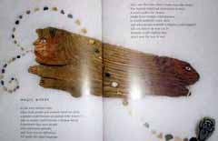

This is the fourth in a series of excerpts from an ongoing dialogue between Russell Lockhart and Paco Mitchell.
Paco Mitchell: At the end of our last dialogue, we imagined ourselves deep underground in the caves at Lascaux, looking up at Paleolithic paintings of animals. We marveled at the paintings themselves and wondered about the state of mind of the hunters/artists/shamans who painted them.
As I later mulled over your insights and intuitions, I thought about the vast gulf separating humans today from those early periods, especially where animals are concerned. In no phase of history during the past several thousand years were we ever so utterly dependent on animals as early humans were during Paleolithic times—before the advent of agriculture. (We could say that the ratio of importance between animals and humans for Paleolithic nomads was practically one-to-one. Agriculture introduced a multiplier into the equation, since one ox could plow many acres and help produce millions of grains, thus supporting a larger human population.) The very life of the nomadic tribes, however, depended in high degree on the individual animals they hunted, so they recognized in those animals the source of life. The central importance of animals thus gave rise to ritual forms of worship, cults and cosmologies and the campfire stories of an indispensable oral tradition.
Russell Lockhart: Of course, that state of mind, although lasting thousands of years, finally gave way to another spirit... what I like to call the cornucopian spirit—the advent of agriculture. The cornu of that word is the goat’s horn, so here is the transition image of the animal from earlier time, albeit only a piece and not the whole dynamic image we saw in the caves. The copia refers to the abundant outflowing from the horn, the full measure of grains, and flowers, and fruits— literally the great harvest of the “above ground” earth.
PM: I’m reminded of Eliade’s The Forge and the Crucible, where he draws a remarkable parallel between the distant Paleolithic past and our current situation and future outlook. I think it’s worth quoting at length:
“As for the crises of the modern world, we must bear in mind that this world inaugurates a completely new type of civilization. It is not possible to foresee its future developments. But it is useful to remember that the only revolution comparable to it in the past history of humanity, that is, the discovery of agriculture, provoked upheavals and spiritual breakdowns whose magnitude the modern mind finds it well-nigh impossible to conceive. An ancient world, the world of nomadic hunters, with its religions, its myths, its moral conceptions, was ebbing away. Thousands and thousands of years were to elapse before the final lamentations of the old world died away, forever doomed by the advent of agriculture.”
Eliade continues:
“One must suppose that the profound spiritual crisis aroused by man’s decision to call a halt and bind himself to the soil, must have taken many hundreds of years to become completely integrated. It is impossible to imagine the upheaval of all values caused by the changeover from the nomadic to the sedentary life and to appreciate its psychological and spiritual repercussions. The technical discoveries of the modern world, its conquest of Time and Space, represent a revolution of similar proportions, the consequences of which are still very far from having become part of us.”
RL: Eliade's reference to the conquest of time and space could as well be thought of as the “triumph of light” over darkness, epitomized by the electric light that has severed the human tether to the light and dark cycle those Paleoliths lived by so intimately. But, oh, the unintended consequences! National Geographic recently in a cover story entitled “The End of Night: Why We Need Darkness,” speaks to our lost connection with the sky in urban centers and the cost of this “constant light,” not only in energy terms, but in disturbing our biological rhythms and portending major consequences to our health and well-being. I was struck by the inside front pages of this issue in an advertisement showing just those images from Lascaux right along with IBM's new slogan: Stop Talking, Start Doing. Yes, but doing what? Well, my response, as you well know, is something on the order of “Do the Dream.”
PM: There must be something about deep darkness itself that invites and impels the human psyche to seek out, “to do,” if you will, transformative states. Partly this results from the protection “cave-consciousness” affords against sensory distractions (e.g., John Lilly’s isolation tank). Therefore we often close our eyes or “go blank” when we are trying to concentrate on an image or a thought. Caves, graves, catacombs, tombs, ossuaries, cemeteries, pyramids, sweat lodges, wilderness, deserts, forests, deep glades, basements, attics, closets, tunnels, dark taverns and pubs, abandoned places, remote places, small places, tents, mummy sleeping bags, dream helmets and, of course, dreams themselves—how many actual places have humans found, built, discovered and sought out in their effort to stay connected to the primordial, living imagination? Dreams may be the most direct opening we have today if we wish to enter the imaginal depths. They are not the only means of access, to be sure, but they are the most ubiquitous. Interestingly, we can still see in dreams—in their images, their mythic patterns, their amazing associative nature, their implication in synchronicities, their tendency to reflect totalities—remnants of that Paleolithic experience which you called the “rhizomic integrity of world, imagination and dream.” What Thomas Berry called the “shamanic personality,” then, is available—in principle—to anyone, virtually given, with close enough attention to dreams, or to dreamlike states.
RL: Your comments are rich loam indeed! I'm glad you refer to Eliade, as his fertile work seems largely neglected now and deserves a fresh reading. His vision of the modern world spawning a “spiritual breakdown” recalls the Hopi prophecy of the two paths that increasingly confront the world's people and the choice that each person must make. The Hopi called these the path of the two-hearted (the “fate of the world be damned” attitude that pervades nearly every dimension of our existence) and the path of the one-hearted (whose heads are one with their heart and whereby the fate of the earth becomes a primary concern). I am seeing these prophecies cited more and more but nowhere more poignantly than in singer and songwriter Kristine Robin's on-line video called “Are we creating the world of our dreams?” (http:www.kristinerobin.com/worldofdreams/oneisthesun.html). After seeing this video one might well say the world is becoming ever more a nightmare. But, like Kristine Robin, I'm basically an optimist, and so I look for ways to alter what seems like an inevitable flood of increasingly disastrous consequences of the dominance by the power and the rapaciousness of the two-hearted.
PM: One way to counteract the destructive flood is to “listen” for Merlin's Cry, as it echoes the earlier lamentations of the old stone-age shamans. In effect, the unconscious itself is crying out for recognition, not just the “shadow side” of modern life or the dark side of the individual personality, but the deepest reaches out of which modern consciousness itself slowly evolved. And, as you have said so many times, this cry for recognition cannot be denied.
RL: You have noted that Berry is calling for a kind of “rescue” by a hoped-for and wide-spread emergence of the shamanic personality. I like to think of this as an increasing possibility of emergent access to the shamanic potential in each person stimulated by the present extremities. We are not in want of gurus. The very idea of guru has become ever more commodified, so that we now have a “guru industry.” We need not seek out true or false shamans either in far away places or the nearest talk show, nor become apprentices for decades of training, or pay huge sums. I don't deny the value of those honest shamanic traditions. But the time is now for each and every person of the earth to seek the shamanic potential in themselves. And where is that potential? As you say, “dreams may be the most direct opening we have today.” I agree. Yet, look at any magazine or at the ads on TV and—as I forewarned years ago in these pages—you will see ever increasing use of the word or idea of dream in these mechanisms of commodification. An enormous effort is being made to associate dream and money. Not that anyone will pay you for your dream, but instilling in you the “triggers” of consumption so that you will dream what you then will feel impelled to buy—ah!—that is the dream of all advertising! In this way dreams too will become subject to the commodification of desire. Still, the dream itself remains remarkably subversive to this process and for that reason my optimism remains high. I am working on this in a book I'm calling Commodification of Desire.
I have emphasized in these pages on several occasions that every dream has to do—not with the past—but with the future. Let me add another layer of brashness to this assertion and say that every dream is a portal to shamanic potential, every dream a portal to the hidden caves of imaginal reality, every dream a potential gateway to rhizomic consciousness.
But, as you say, not in dreams only. Also in those “pregnant” moments where time itself seems to open up what Lorca called, “something else.” What I have in mind is not only those momentous synchronistic events which literally cannot be ignored, but those more frequent, almost everyday moments of experience passing through our consciousness like minute sparks only momentarily perceived, if at all. These too are portals. Let me give you a recent example related to our dialogue of what I mean.
In our last dialogue, I recalled the poem entitled “Magic Words'” by Edward Field, as a perfect example of some of the things we had been talking about. Before I could write out the words of the poem I had to find it because it was not fully in my memory. I knew the poem was in Jerome Rothenberg's Shaking the Pumpkin, but I couldn't find that book—not yet unpacked for shelving in my newly renovated office space. But I did have Robert Bly's News of the Universe: Poems of Twofold Consciousness and I knew it was in there—and that is where I looked it up in order to quote in our dialogue. The next day I was at the library, and decided to see if I could find Field's original work, where the poem first appeared as he attempted to distill the songs and stories he learned from Knut Rasmussen's explorations of the Inuit. They did not have the book, but they did have two copies of his Magic Words—his volume of poems inspired by the Inuit stories and songs. However, there was no copy on the shelf. So where were the two copies? As I had done a number of times on other occasions, I put in a request for the book to be found. This they did and the next day I received notice that the book awaited my return to the library.
Before I went to the library, I unpacked more books as well as bringing in a number of pieces of art and other things that had been in storage for more than seven years since I closed my office in 2001. When I went to the library, I discovered to my surprise that the reason I had not been able to find the book was that it had been shelved in the children's section. Stupid me! I should have looked at the card catalog more carefully. Now, with the book in hand, I looked for the poem that gave the book its title and the one I quoted in the dialogue. The book was illustrated with what were called the “mystical paintings” of Stefano Vitale.
What I saw momentarily took my breath away. Here is Vitale's painting—a driftwood image with a person at one end and an animal at the other.

Now look at the piece of drift wood I had that very morning brought out of 7 years of storage— a gift from someone then living in Alaska!
How, then, does such a congeries of “ordinary” events become a portal to rhizomic consciousness? It begins first, I think, in the capacity of these events to “stop” the flow of intentional consciousness, as if a far-off voice was calling. The “portal” exists in that moment of stopping. Still, unless these moments are profoundly synchronistic or deeply disturbing, intentional consciousness recovers quickly from the awkward moment and like a wave breaks over the portal and access to it washes away.
PM: Russ, I like what you said about the “frequent, almost everyday moments of experience passing through our consciousness like minute sparks.” That such moments can become openings to the “shamanic imagination” means that everyday experience can produce imaginal yields similar to dreams or synchronicities, an exciting thought indeed. This outlook places the creative imagination within reach of anyone. You also caution, however, that our habitual modern attitude— what you call “intentional consciousness”— predisposes us to rush past the sparks, quickly backfilling the breaches in our attention that might otherwise lead to our deepening.
Owen Barfield, in The Rediscovery of Meaning, has much to say about this. He refers to what is nowadays called “lucid dreaming", about which much has been made recently: a person dreams, and at the same time is aware of dreaming. Barfield finds in this phenomenon a useful pattern with which to differentiate between “intentional consciousness” and what you and I are variously calling the shamanic imagination, the eternal present, the creative imagination or the rhizome. Barfield locates lucid dreaming within the unusual category of “extraordinary consciousness” which, he declares, is not only subjective, but also includes what we now think of as “objective” phenomena. In fact, for Barfield, extraordinary consciousness— though associated with poetic vision and lucid dreams—is every bit as real as “rocks, stones and trees.” He equates this state of mind with what he calls original participation, the archaic mode of imaginative interaction between man and nature that “people took for granted as happening. That is why they were able to perceive mythical beings in trees and animals.”
Using lucid dreaming as a model, then, Barfield conceives of imaginative vision in general as “extraordinary consciousness—not just the dream stage, but the whole gamut of it—present with ordinary consciousness.” This subtly profound statement amounts to a resounding affirmation of your idea of the “minute sparks in ordinary experience.”
Your notion of “openings” that can lead to a deeper awareness, reminds me of the old engraving of the philosopher peering through a “crack in the world.” To me, the philosopher seems drawn toward the opening, not by accident, but by deliberate search. It is as if he left “village consciousness” behind, and was actually looking for the minute sparks that would lead him to a vision of the rhizome, symbolized by the Medieval mind as a Divine Realm of gears, orbits and spheres. I also note that he is crawling on his hands and knees. This suggests a willingness to forego the ego’s normal drive toward domination, even if only for a moment, in order to follow the hints that most often appear at the boundaries of our conscious awareness.

Your insight, as I understand it, invites the cultivation of a certain attitude: humility in the face of the unknown, a willingness to follow hints that others might disparage, and courage of a kind we are not accustomed to honor. These might well be qualities of the Hopi “oneheartedness” that you mentioned, so desperately needed in the face of the alternative “two-hearted” refusal to heed the cry of the suffering Earth.
Notice, finally, that the artist of the engraving placed a magnificent tree at the virtual center of the image. I cannot but help recall the image of the tree that appeared in my dream of the four large, iridescent spheres we discussed earlier. The litany of their names—almost an incantation—emphasizes the fourth element by capping the sequence of traditional elements with a surprising name, but also by mysteriously aligning it with the image of a tree. And what again were the names? Gold, Silver, Zephyr and... Harmonium. The tree, of course, as one of the oldest symbols, stands right in our midst, a living reminder of your sparks.
In your book Psyche Speaks, you said: “It was the poet, Paul Valéry, who observed the subtle irony that we understand ourselves thanks only to our speed past words.” Perhaps Valéry would agree that our speed past words is also a speed past those everyday moments, the “minute sparks,” you refer to here. It seems clear enough, then, that a deeper understanding of both ourselves and the world would come about if we could periodically “recuse” ourselves, so to speak, from the lock-step frenetics of modern time, and open ourselves to Barfield’s extraordinary consciousness or Eliade’s eternal present, both of which are implicit in your rhizome.
RL: While looking for something else recently, I came across Eliade's journal from 1957-1969, called No Souvenirs. I mention it because I had forgotten Eliade's fiction, and most particularly, his book, The Forbidden Forest. He says of this book, "I still believe one day that The Forbidden Forest and other books will be discovered". I don't think that day has arrived. The last time it was checked out in my local library was 1981! I was quite taken by the importance Eliade attached to his writing of fiction. He says, "For me the writing of fiction—sketches, novellas, novels—was more than a violon d'Ingres: it was my only means of preserving my mental health, of avoiding a neurosis". I think what Eliade is alluding to here is specifically the importance of the imagination as we have been talking about it. Of course today we are drowning in medications for our ills. As far as I know, no one is prescribing a dose of imagination, fiction as Rx, for what troubles us. We might do well to listen to Eliade.
PM: I wonder if the title The Forbidden Forest is a Merlin reference?
RL: Not that he would say so but I believe it is so, and like Merlin's cry, it is the imagination itself that remains to be discovered in ways we do not yet comprehend. In this regard, I am so pleased you bring up Owen Barfield, another giant who is scarcely noticed today. It was Barfield who had shown C. S. Lewis (The Screwtape Letters, The Chronicles of Narnia, The Space Trilogy), that mythology was essential to language and literature— one might say, more exactly, the mytho-poetic imagination. But Lewis had trouble fully believing this. One day, Lewis and Tolkien were out walking, and Lewis said to the author of The Hobbit and The Lord of the Rings, " ...ultimately they are worthless, because they are lies". "No", Tolkien shouted, "They are not lies!" Just then, an extraordinary wind came up and blew leaves all about them and they stood there, holding their breath, suspended in wonder. When they began talking again, Tolkien used this as an example of the "truth" of myth. It is a clear example of what you refer to in Barfield's claim concerning original participation, that archaic mode of imaginative interaction between man [these two giants of the twentieth century] and nature [a most curious wind at just the "right moment"]. As Barfield noted, in referring to the Paleolithic (but also to two moderns walking the paths at Oxford University): "That is why they were able to perceive mythical beings in trees and animals".
The imagination of these men, along with T.S. Elliot, Charles Williams, and others, collectively known as "The Inklings", catches hold of us even today and reminds us that it is the imagination—alive as sparks in everyday consciousness, sparks that break into our intentional consciousness— that offer themselves as portals to a vast underground. Vaster still than anything we have ever found. I believe that Barfield is correct when he says that the imagination is as real both in its deep subjectivity and its far-reaching objectivity as the "rocks, stones, and trees". Your Harmonium dream is such an amazing example of this!
You know, Paco, I think in many ways we have become prisoners of the high achievements of the the agricultural revolution, that achievement being the major cultural institutions—all those storehouses of the grains we call "culture". Perhaps we are in the advent of a new revolution, perhaps a new nomadism, perhaps one that begins in what Keats called negative capability, when one "is capable of being in uncertainties, Mysteries, doubts without any irritable reaching after fact & reason". In that space, the portals of imagination, like gateways, open to a "new world", open to exploration in ways that are only hinted at by what we have mentioned so far in these dialogues, and even more so by that to which we have not yet spoken. Dreams, as I have tried to make clear, are "calling" us to "explore the future", to enter into the rhizomic womb and to participate in the birth of what is to come.